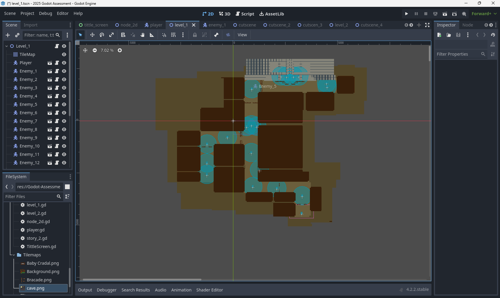
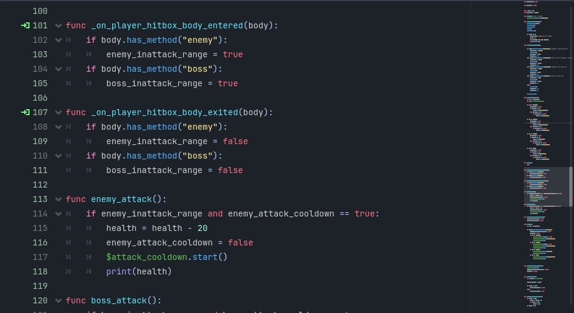
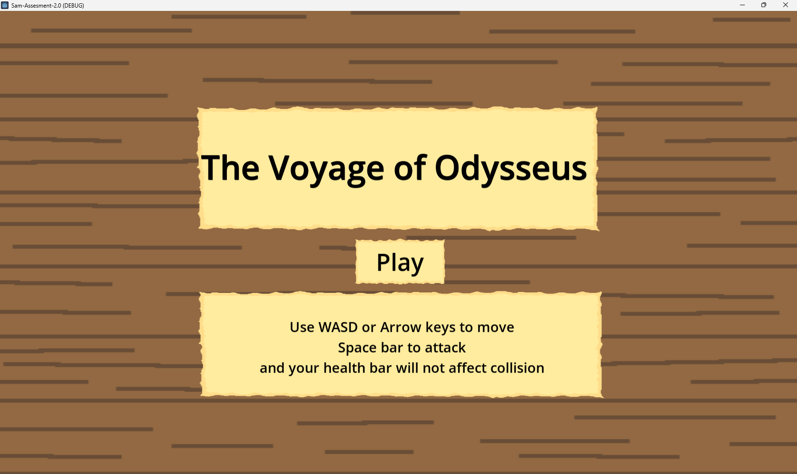

Game Development
Game development combines creative design and technical skills to build interactive experiences. Students can plan a game's concept, create characters and environments, write code for player controls and game rules, and bring sound and visual assets together. Developers test their games regularly to find bugs, improve how the controls feel, and make sure the challenge is appropriate for players. A successful game project considers its intended audience, gives players clear goals and feedback, and works reliably from beginning to end. Game development can involve programming, digital art, animation, sound design, storytelling, and problem-solving.
Game development project gallery
Replace the image paths below with screenshots or artwork from your game projects.



From game idea to playable experience
Game projects begin with an idea for a player, a goal, and a challenge. Developers plan the rules and game flow, build a playable version, and test it often so they can fix problems and improve the experience.
- Choose the intended players, genre, and main game idea.
- Plan the objectives, rules, levels, and visual style.
- Build the core mechanics and create or source game assets.
- Play-test, fix bugs, refine the experience, and share the finished game.
Tools and skills
Game projects can be made with tools such as Scratch, Godot, Unity, or other game engines and creative software. Useful skills include programming, designing clear rules, making or editing visual and audio assets, testing with players, and explaining how design choices support the intended experience.
Ideas to include in a game project write-up
- The intended players, purpose, and goals of the game.
- The rules, mechanics, and creative decisions behind the design.
- The tools, programming techniques, and assets used.
- What play-testing revealed and how the game changed as a result.